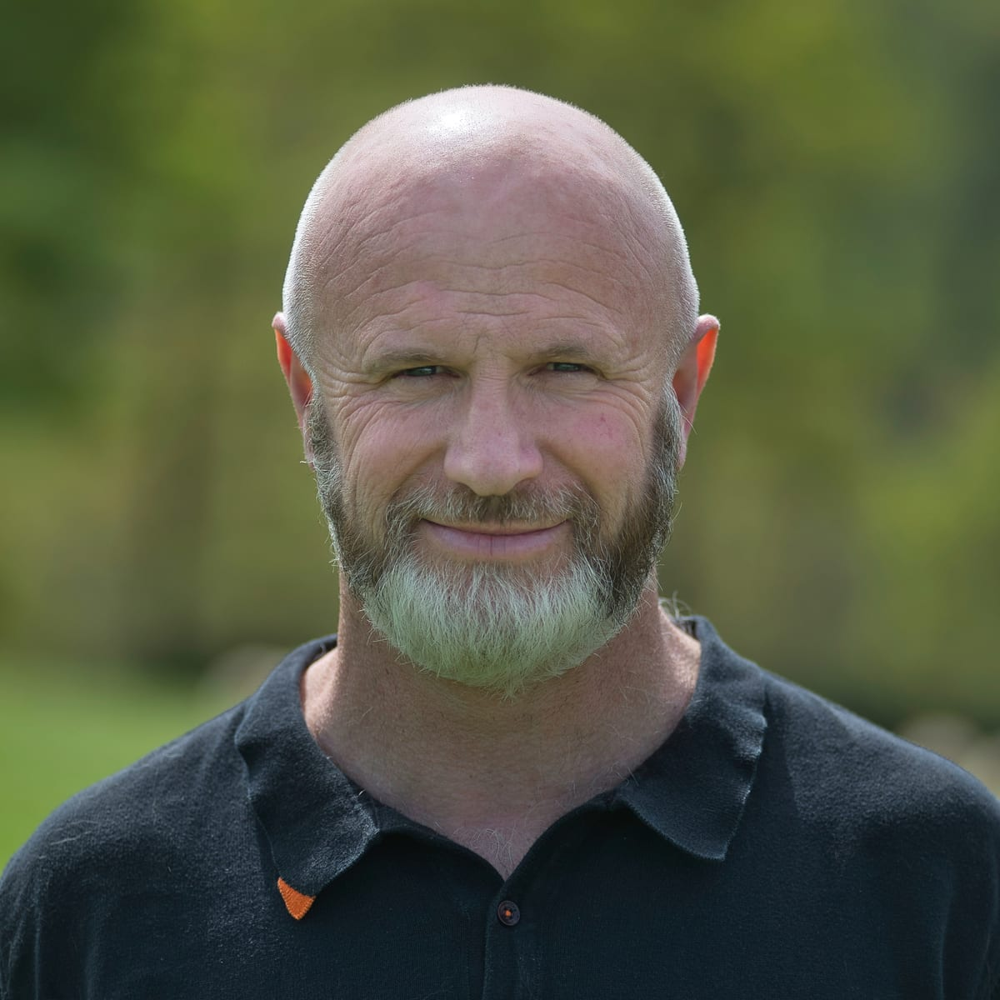

L'histoire d'une famille
Bâtisseurs de communs depuis trois générations
Avant la Seconde Guerre mondiale, Jean Exilard achète Paxkoteia à un célibataire, Pierre Laborde, qui restera vivre avec la famille jusqu'à sa mort, au-delà de ses quatre-vingt-dix ans. Prisonnier en Allemagne, évadé à la troisième tentative, Jean revient avec un carnet d'idées qu'il mettra en œuvre pour son quartier.
Un barrage pour l'électricité du quartier, une mutuelle chirurgicale toujours active, une école pour les enfants des alentours, un bélier hydraulique pour monter l'eau du ruisseau jusqu'à la ferme. — Patrimoine familial Paxkoteia
Cet ADN de bâtisseur de communs — innovation sociale, autonomie énergétique, entraide — traverse la ferme depuis lors. Edouard en est aujourd'hui l'héritier et le passeur, trente ans après sa reprise de l'exploitation.

Portrait d'Edouard Exilard, Seigneur des Agneaux — par Franck Laharrague.